Which enzymes actually make mechanistic sense for cracking open a Schizochytrium cell for DHA oil extraction? A 13-enzyme panel — folded with ESMFold, docked against both their textbook substrate and a modeled probe of the real wall polymer — built to test a mismatch between what this wall is actually made of and which enzymes the literature reports as effective.
Published Schizochytrium lysis protocols report success with cellulase, hemicellulase, lysozyme, and alkaline protease. But directly checking what this cell wall is actually built from complicates that picture.
Schizochytrium's wall is not chitin- or cellulose-based like a fungal wall. It's a Golgi-derived scale structure, ~21–36% carbohydrate (>95% L-galactose, a sulfated galactan) and ~30–43% protein/glycoprotein (Kazama & Kimura, Cell wall composition and synthesis via Golgi-directed scale formation in Schizochytrium aggregatum, Arch Microbiol). No cellulose, no chitin, no peptidoglycan — anywhere.
Yet the empirical lysis literature reports cellulase and hemicellulase as effective, and lysozyme and alkaline protease (commercially, Alcalase) are standard choices too (Cui et al., Optimization of Enzymatic Cell Disruption for Improving Lipid Extraction from Schizochytrium sp., PubMed 29367487; see also the Cell Walls of Lipid-Rich Microalgae review, MDPI 2311-5637/10/12/608). Of the four, only alkaline protease has an obvious mechanistic target (the wall's substantial protein fraction) — cellulase and lysozyme's canonical substrates simply aren't present. This page tests whether structure and docking evidence can distinguish "these enzymes happen to have promiscuous affinity for the real wall polymer" from "they work by some other route entirely."
"Alcalase" is itself a useful example — commercially it's subtilisin Carlsberg from Bacillus licheniformis (UniProt P00780), but the same catalytic function has documented origins in B. subtilis and B. pumilus too. That became the template for the whole panel: wherever possible, each enzyme class is represented by the same function expressed in different host organisms, to see whether host origin shows up as a real structural/binding difference or is functionally silent.
Five functional classes, each with 2–4 host-origin variants (lysozyme instead compares three structurally unrelated folds — GH22, GH24, GH25 — that converge on the same muramidase activity).
| Accession | Enzyme | Class | Host | Note |
|---|---|---|---|---|
| P00780 | Subtilisin Carlsberg | protease | B. licheniformis | = commercial Alcalase |
| P00782 | Subtilisin BPN' | protease | B. amyloliquefaciens | host variant |
| P04189 | Subtilisin E | protease | B. subtilis | host variant |
| P07518 | Subtilisin (mesentericopeptidase) | protease | B. pumilus | host variant |
| P00698 | Lysozyme C | lysozyme | Gallus gallus | GH22 fold |
| P00720 | Endolysin | lysozyme | phage T4 | GH24 fold |
| P25310 | Lysozyme M1 | lysozyme | Streptomyces globisporus | GH25 fold (Chalaropsis-type) |
| P07981 | Endoglucanase I | cellulase | Trichoderma reesei | no cellulose in the wall |
| O74706 | Endoglucanase B | cellulase | Aspergillus niger | host variant |
| G0RUP7 | Xylanase 2 | xylanase | Trichoderma reesei | xylose is a real (minor) wall sugar |
| P55330 | Xylanase B | xylanase | Aspergillus niger | host variant |
| G0L322 | β-agarase A | agarase | Zobellia galactanivorans | best mechanistic match to the real wall sugar |
| Q9RGX8 | β-agarase B | agarase | Zobellia galactanivorans | isoform of above |
All sequences from UniProt (reviewed/Swiss-Prot entries only). β-agarase's natural substrate (agarose) contains 3,6-anhydro-L-galactose — built from the same L-galactose backbone reported for the Schizochytrium wall — making it the one class in this panel with an a priori mechanistic rationale nobody had tested before.
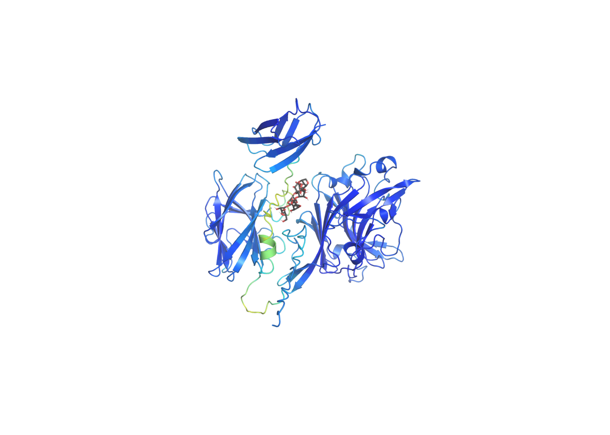
All 13 sequences folded locally (facebook/esmfold_v1 via HuggingFace transformers, single-sequence input, no MSA) — same pipeline used elsewhere on this site. One prediction per protein, no ensemble/uncertainty estimate beyond the model's own per-residue pLDDT.
| Accession | Label | Length | Mean pLDDT | Fold time |
|---|---|---|---|---|
| P00780 | subtilisin_carlsberg | 379 aa | 0.87 | 18.8 min |
| P00782 | subtilisin_BPN | 382 aa | 0.86 | 18.4 min |
| P04189 | subtilisin_E | 381 aa | 0.86 | 19.1 min |
| P07518 | subtilisin_pumilus | 275 aa | 0.86 | 9.3 min |
| P00698 | lysozyme_C_chicken | 147 aa | 0.79 | 1.8 min |
| P00720 | endolysin_T4 | 164 aa | 0.82 | 2.4 min |
| P25310 | lysozyme_M1_strepto | 294 aa | 0.77 | 10.9 min |
| P07981 | endoglucanase_I_Tr | 459 aa | 0.74 | 32.5 min |
| O74706 | endoglucanase_B_An | 331 aa | 0.86 | 14.0 min |
| G0RUP7 | xylanase2_Tr | 223 aa | 0.81 | 5.4 min |
| P55330 | xylanaseB_An | 225 aa | 0.80 | 5.3 min |
| G0L322 | betaagaraseA_Zg | 539 aa | 0.77 | 43.0 min |
| Q9RGX8 | betaagaraseB_Zg | 353 aa | 0.74 | 16.4 min |
All 13 folded without failure; pLDDT sits in a reasonably-confident 0.74–0.87 range throughout, with no systematic difference by functional class or host — fold quality doesn't appear to be gating anything downstream here.
Cartoon rendering (PyMOL), colored by per-residue pLDDT — the same confidence value reported in the table above, mapped per-residue instead of averaged.
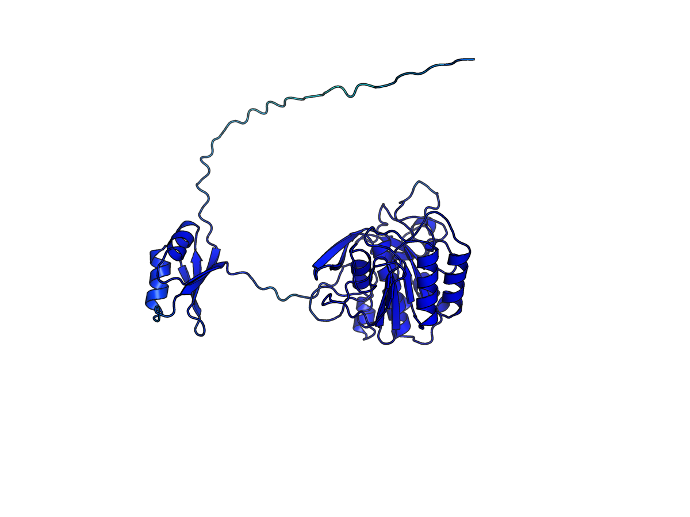
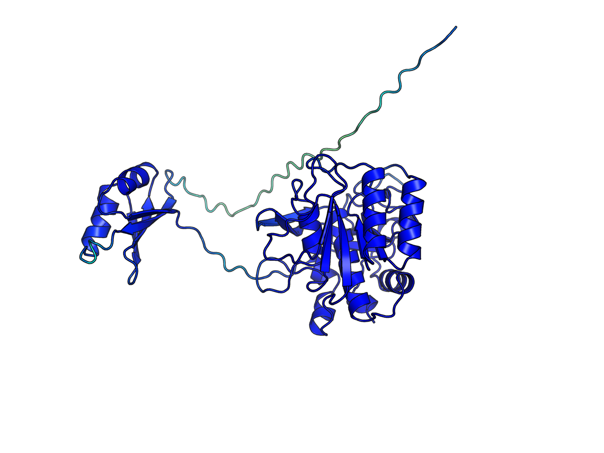
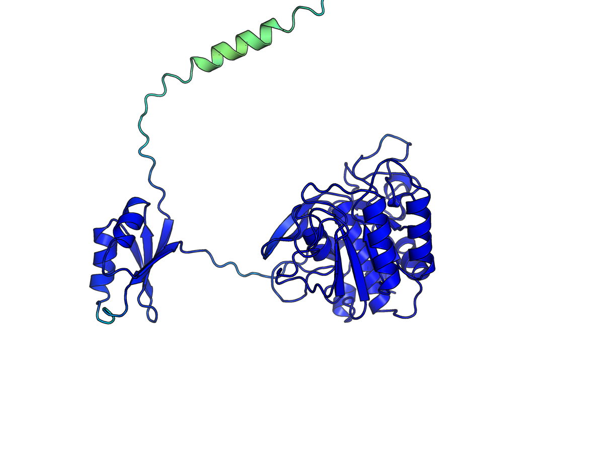
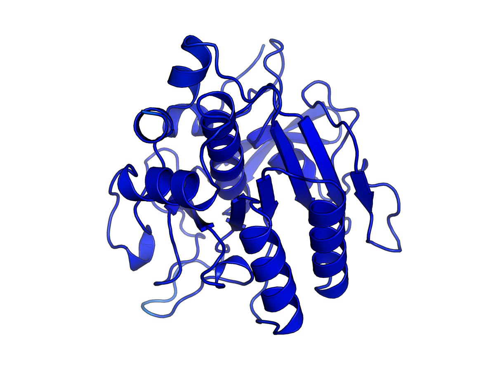
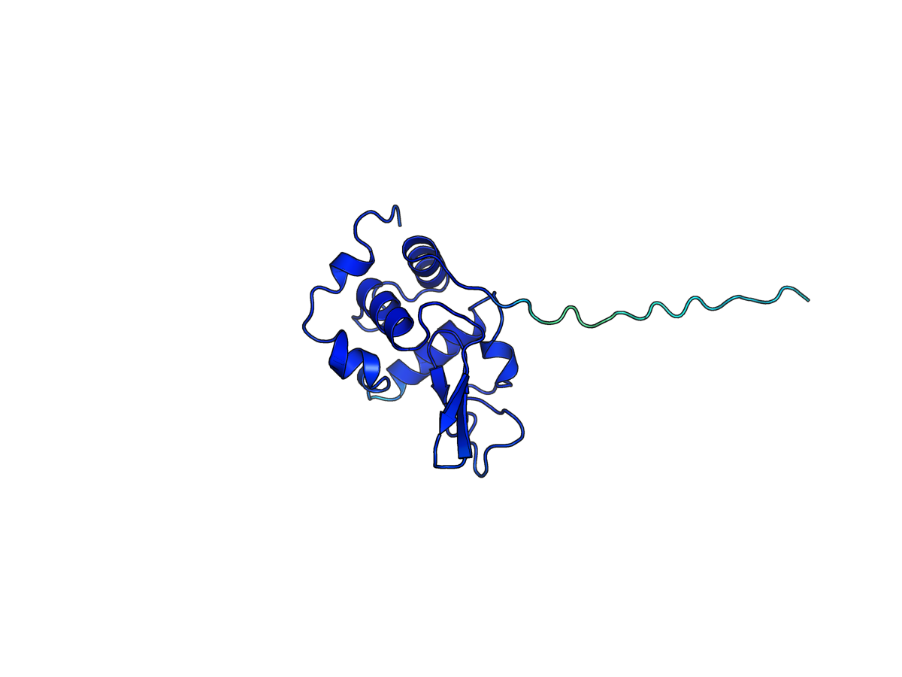
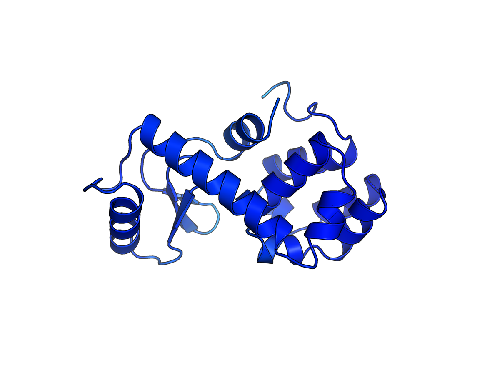
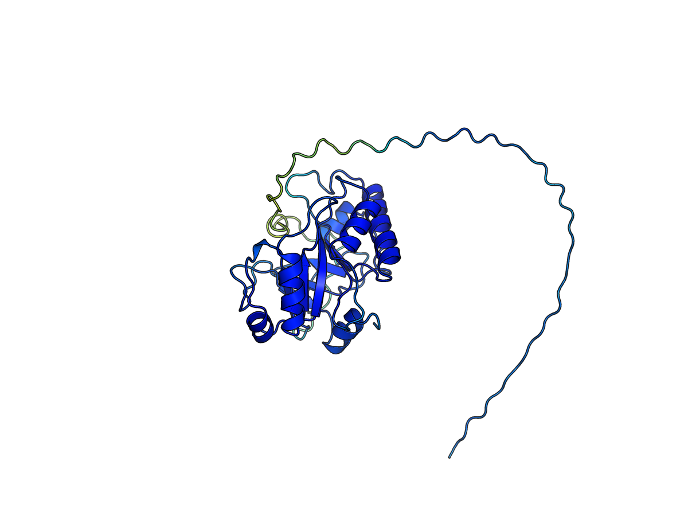
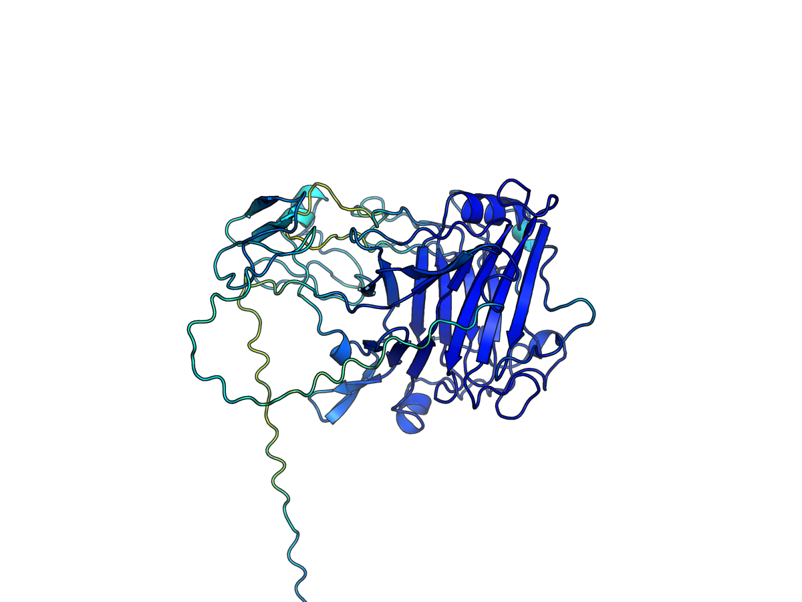
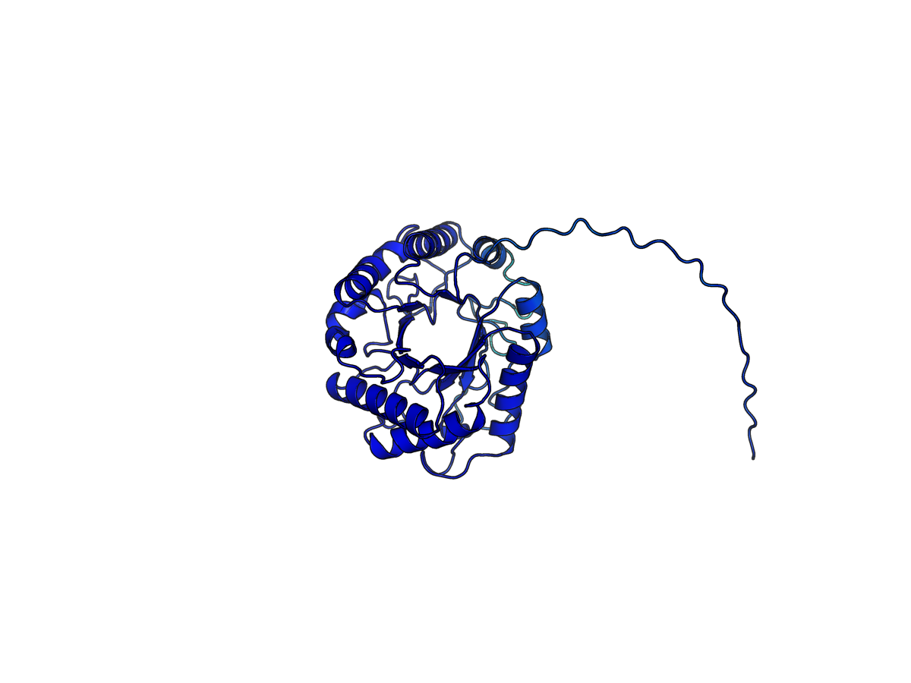
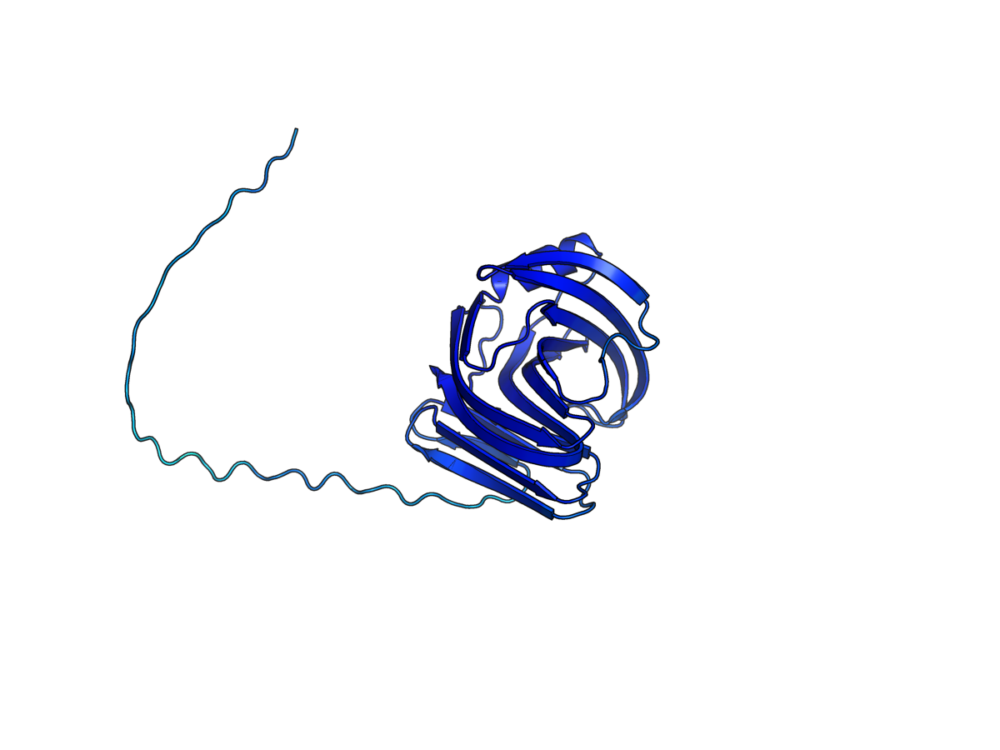
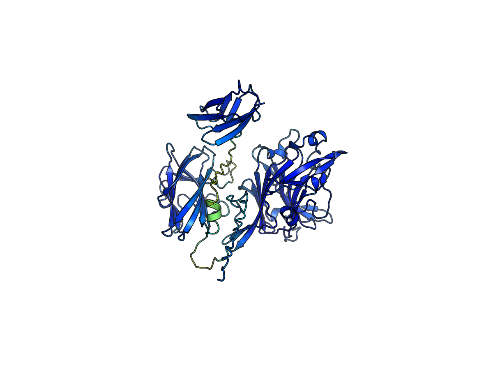
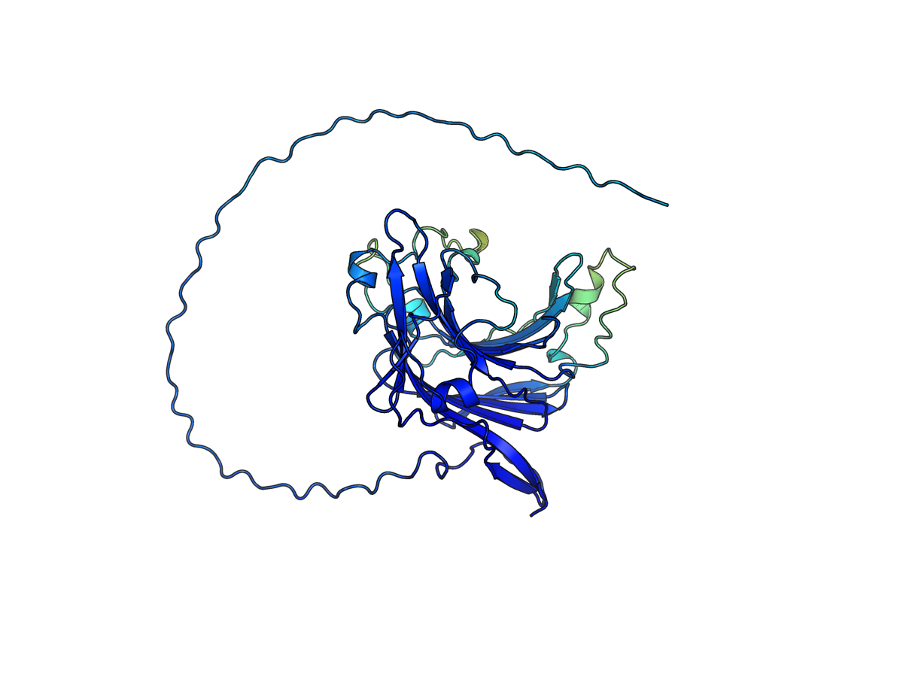
Each folded enzyme was docked (AutoDock Vina, via the vina/meeko python bindings) against two ligands: its own canonical substrate, and one shared probe representing the real wall polymer.
The search box covers the entire folded protein (no active-site residues were mapped for any of these 13 structures before docking), which Vina itself flagged during the run ("search space volume is greater than 27000 ų... at low exhaustiveness, it may be impossible to utilize all CPUs"). Combined with exhaustiveness=8 (moderate, not exhaustive) and Vina's scoring function not being specialized for carbohydrate chemistry, absolute affinity values here should not be read as accurate binding free energies. They're treated as a relative, hypothesis-generating signal only — see evidence tiers.
Vina affinity in kcal/mol (more negative = stronger predicted binding). Gap = canonical − galactan-probe affinity; a small or reversed gap means the enzyme binds the modeled wall polymer about as well as, or better than, its own textbook substrate.
| Accession | Enzyme | Host | Canonical | Galactan probe | Gap |
|---|---|---|---|---|---|
| P25310 | lysozyme_M1 (GH25) | S. globisporus | −6.622 | −6.597 | 0.03 |
| P00698 | lysozyme_C (GH22) | G. gallus | −6.930 | −6.725 | 0.21 |
| O74706 | endoglucanase B | A. niger | −6.754 | −6.513 | 0.24 |
| P00780 | subtilisin Carlsberg | B. licheniformis | −6.658 | −6.342 | 0.32 |
| P04189 | subtilisin E | B. subtilis | −6.359 | −6.679 | −0.32 (reversed) |
| Q9RGX8 | β-agarase B | Z. galactanivorans | −8.022 | −7.548 | 0.47 |
| P07981 | endoglucanase I | T. reesei | −8.220 | −7.525 | 0.70 |
| P00720 | endolysin (GH24) | phage T4 | −7.588 | −6.672 | 0.92 |
| P07518 | subtilisin (pumilus) | B. pumilus | −7.713 | −6.713 | 1.00 |
| P55330 | xylanase B | A. niger | −7.413 | −6.369 | 1.04 |
| G0L322 | β-agarase A | Z. galactanivorans | −9.528 | −7.803 | 1.73 |
| P00782 | subtilisin BPN' | B. amyloliquefaciens | −8.602 | −6.781 | 1.82 |
| G0RUP7 | xylanase 2 | T. reesei | −8.857 | −6.740 | 2.12 |
O74706 (A. niger endoglucanase B) binds the modeled wall probe almost as well as cellopentaose itself (gap 0.24 kcal/mol) — despite the wall containing no cellulose. If this holds up under real (non-blind) docking, it's a candidate structural explanation for why cellulase empirically works on Schizochytrium: not because it recognizes cellulose that isn't there, but because it has promiscuous affinity for the sulfated galactan that is.
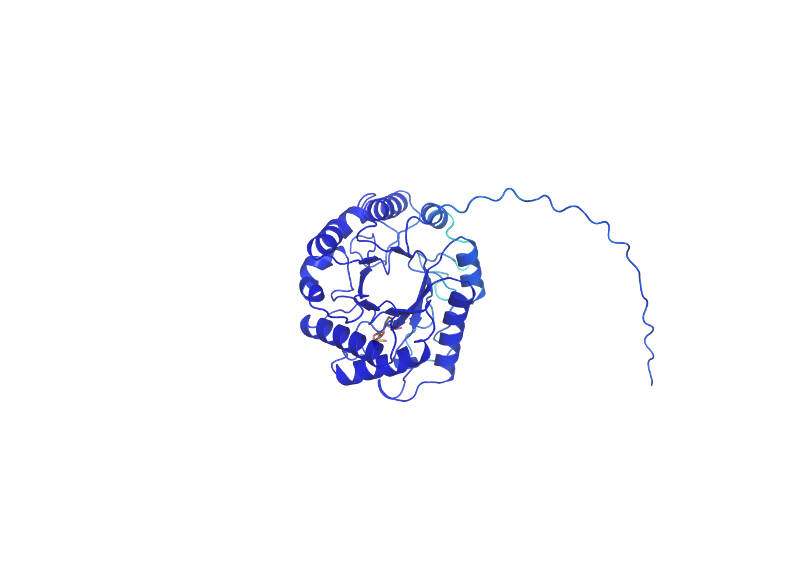
P04189 is the only enzyme in the panel where the galactan probe outscored the canonical ligand. A single data point from an unvalidated blind-docking setup shouldn't be over-read, but it's the most specific, falsifiable prediction this page makes — worth a focused (non-blind) re-dock before drawing any conclusion from it.
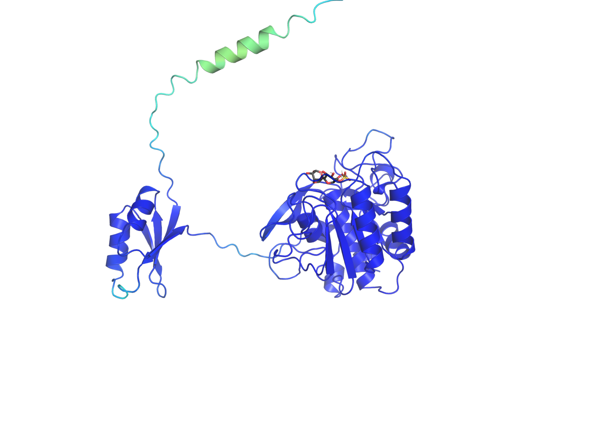
Both xylanases and three of the four Alcalase-family proteases show the largest canonical-vs-probe gaps in the panel (>1 kcal/mol) — the least support here for a direct wall-polymer-binding mechanism. For the proteases this isn't a problem: the wall is 30–43% protein, so alkaline protease has an obvious real target regardless of what this probe ligand shows.
The four Alcalase-family proteases — nearly the same fold, broadly similar sequence identity — span a 2.2 kcal/mol range in canonical-substrate affinity (−6.36 to −8.60), with B. amyloliquefaciens subtilisin BPN' the strongest binder by a clear margin. Host origin is not functionally silent here, at least in this blind-docking approximation.
Same rendering convention as above (receptor cartoon by pLDDT, ligand as sticks) for the rest of the panel — docked here against the shared wall probe.
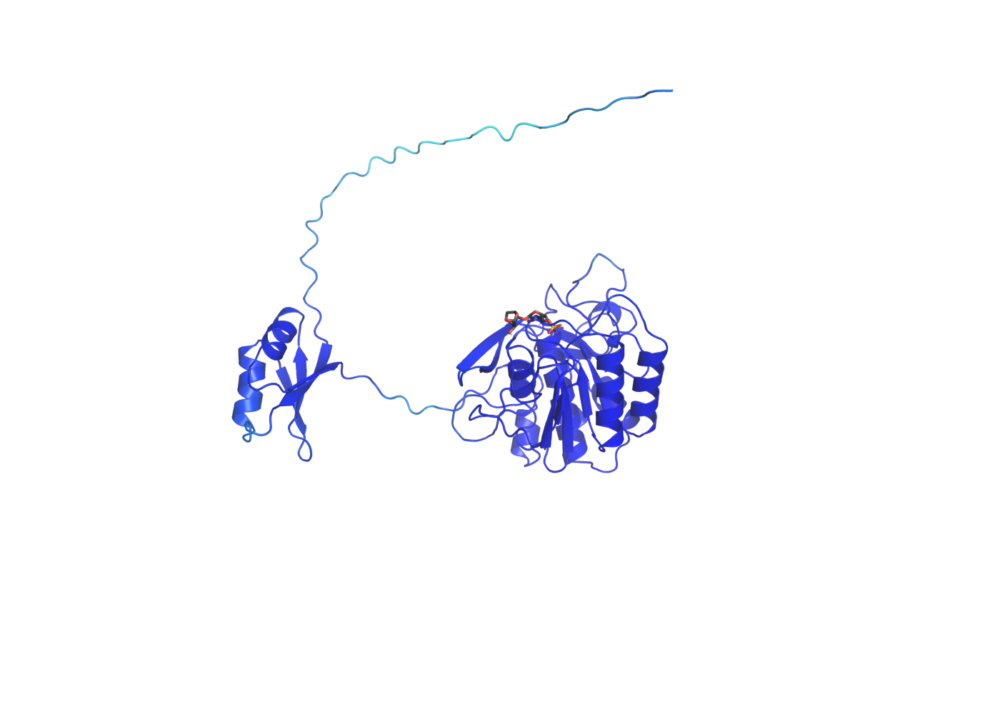
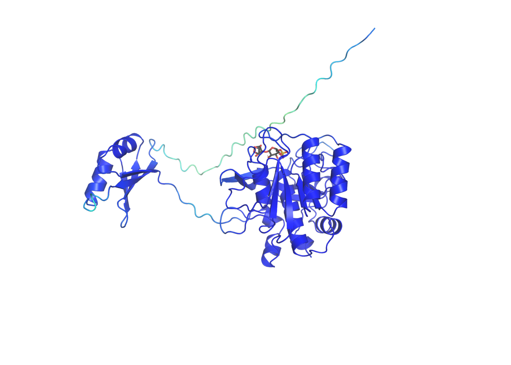
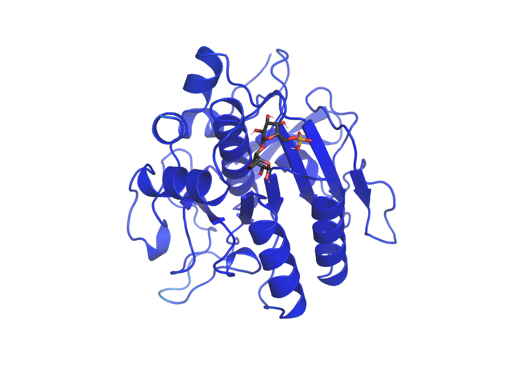
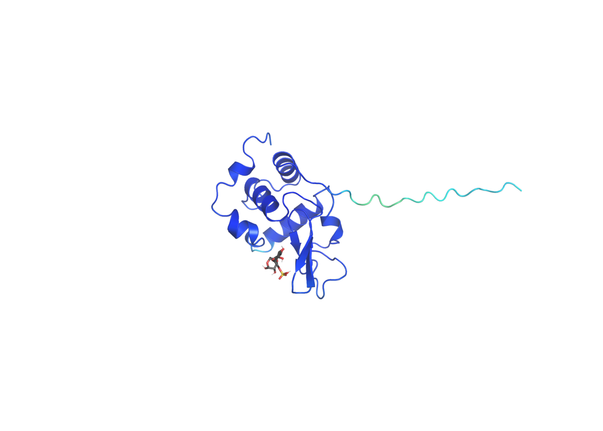
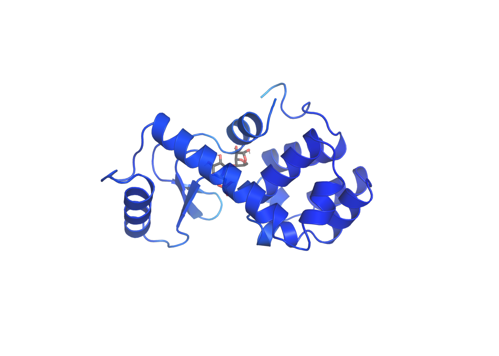
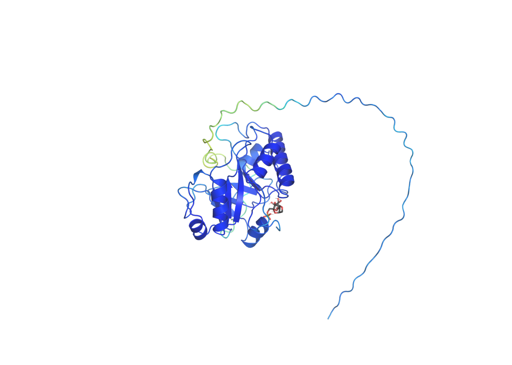
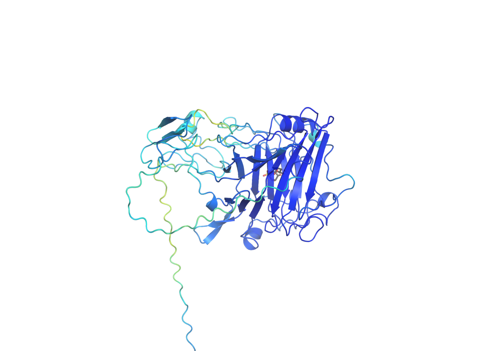
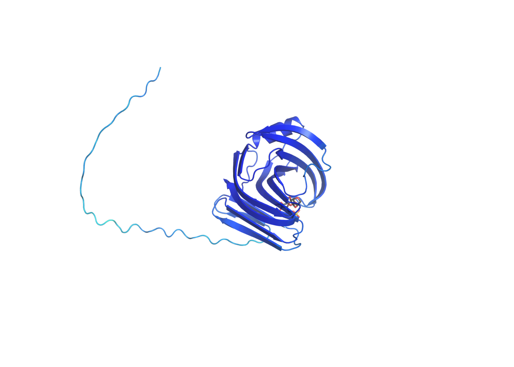
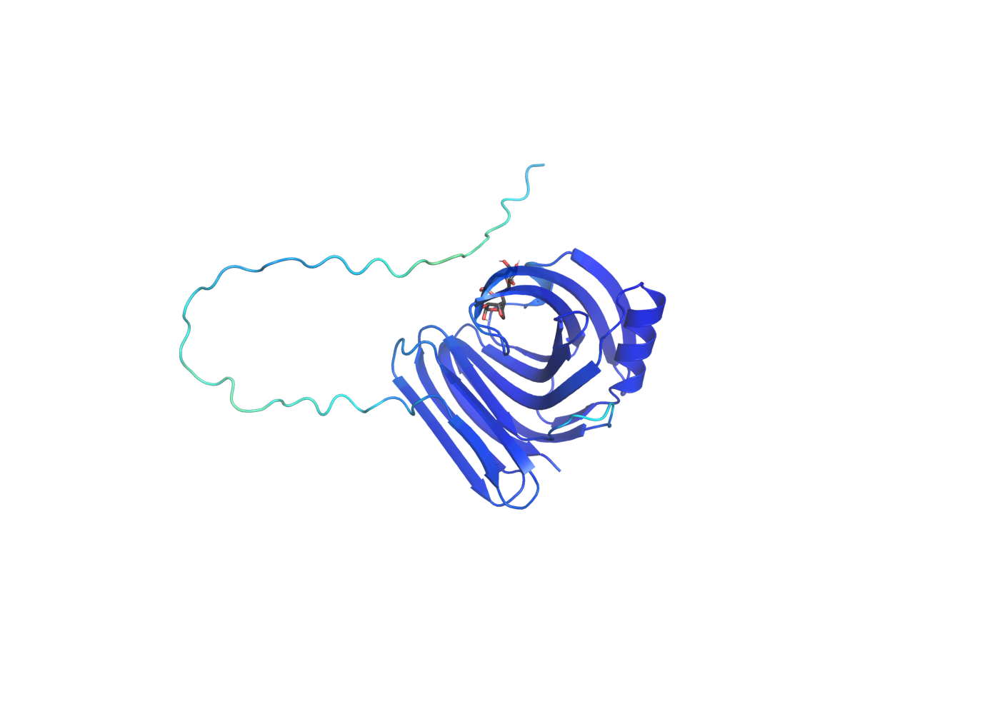
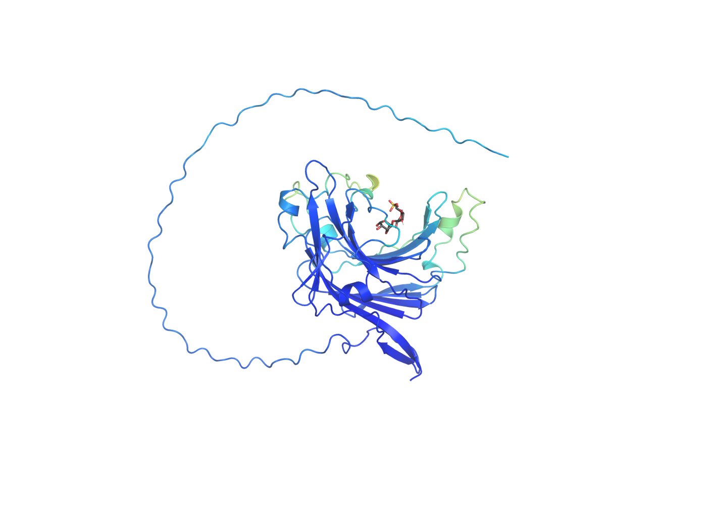
Consistent with the rest of this site: findings here sit at genuinely different confidence levels.
The wall-composition mismatch itself (L-galactan/protein wall vs. cellulase/lysozyme in the empirical lysis literature) — drawn directly from published compositional analysis, not this project's own modeling.
Every docking affinity and gap above. Blind search box, moderate exhaustiveness, a scoring function not specialized for carbohydrates, and — for the galactan-probe ligand specifically — a modeled structure with no solved reference to validate against. Read comparisons (rankings, gaps) as more trustworthy than absolute kcal/mol values.
The subtilisin E reversal and the cellulase near-parity result are each based on one blind docking run against one ESMFold model. Both are concrete, falsifiable next steps (focused re-docking once an active site is identified) rather than settled findings.
Structure prediction: local ESMFold (facebook/esmfold_v1 via HuggingFace transformers), single-sequence input, no MSA, GPU (originally RTX 3050; re-run on an RTX 5060 alongside the work described below, which is why fold times you'll see in the raw summary run faster than the table in section 03 implies for a 3050). Docking: AutoDock Vina via the vina python package, exhaustiveness=8, 9 poses per run, receptor prep via Open Babel (obabel, rigid), ligand prep via RDKit + Meeko. Sequences: UniProt reviewed (Swiss-Prot) entries only. Full pipeline is maintained alongside this project's other analysis code: fetch/fold/dock/render scripts in scripts/ (fetch_lysis_enzyme_sequences.sh, run_esmfold_lysis_panel.py, prep_lysis_ligands.py, dock_lysis_panel.py, render_lysis_structures.py, render_lysis_docking.py), all 13 sequences/structures and the 6 prepped ligands under results/lysis_enzymes/, raw Vina PDBQT poses and per-run logs under results/lysis_enzymes/docking/, the compiled affinities in results/lysis_enzymes/docking_results.json, and the rendered figures under figures/lysis_enzymes/.
Part of the Schizochytrium HS6 comparative genomics site. See also: Metabolic Engineering: KO Target Portfolio (a related but distinct question — genetic knockouts to change lipid composition, vs. this page's external enzymes for downstream processing).
{kind=link}
{kind=link}